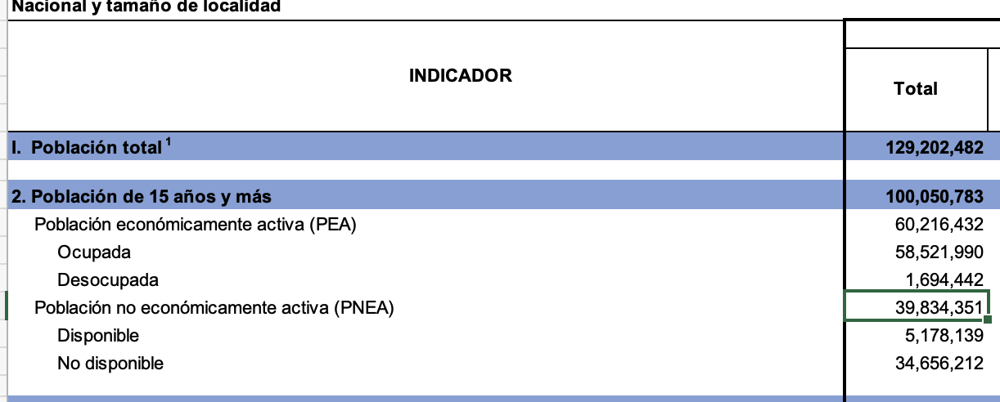

enoe0<-enoe0 %>% dplyr::select(-ends_with(".y")) %>%# quita las variables que terminan con .y dplyr::rename_at(vars(ends_with(".x")), ~ stringr::str_remove(.x, ".x")) # renombra todas las variables que terminan en .x quitándoles el sufijo
Hoy pegaremos de manera similar a los individuos, pero primero nos vamos a quedar con quiénes tienen resultados definitivos de entrevistas completas
enoe0 %>%count(as_label(r_def))
# A tibble: 14 × 2
`as_label(r_def)` n
<fct> <int>
1 Entrevista completa 125951
2 Nadie en el momento de la entrevista 4876
3 Ausente temporal 1659
4 Se negó a dar información 5441
5 Informante inadecuado 201
6 Otro motivo 2496
7 Adecuada para habitarse 5751
8 De uso temporal 3489
9 Inadecuada para habitarse 322
10 De uso temporal para fines diferentes de habitación 481
11 Demolida 80
12 Uso permanente para fines diferentes a los de habitación 262
13 El hogar se mudó 79
14 Entrevista suspendida 241
sdemt223 %>%count(as_label(c_res))
# A tibble: 3 × 2
`as_label(c_res)` n
<fct> <int>
1 Residente habitual 418269
2 Ausente definitivo 7406
3 Nuevo residente 5474
enoe0 <- enoe0 %>%filter(r_def==0) #entrevista completasdemt223 <- sdemt223 %>%filter(r_def==0) %>%filter(!c_res==2) # residente que no es ausente
enoe1<-enoe0 %>% dplyr::left_join(sdemt223, by=idhog) %>% dplyr::select(-ends_with(".y")) %>%# quita las variables que terminan con .y dplyr::rename_at(vars(ends_with(".x")), ~ stringr::str_remove(.x, ".x"))
Warning: `cd_a` and `cd_a` have conflicting value labels.
ℹ Labels for these values will be taken from `cd_a`.
✖ Values: 1
dim(enoe1)
[1] 422778 129
Ya tenemos lista una base de individuos que podemos pegar con nuestra base de coe. Pero revisemos que este cuestionario tiene preguntas simulares a la cuestionario de otras tablas
used (Mb) gc trigger (Mb) limit (Mb) max used (Mb)
Ncells 1152378 61.6 1996280 106.7 NA 1996280 106.7
Vcells 196126711 1496.4 540486035 4123.6 16384 450328245 3435.8
Algunos tabulados de la ENOE
## Sin expansiónenoet223 %>%filter(eda>14& eda<99) %>%mutate(clase1=as_label(clase1)) %>% janitor::tabyl(clase1)
clase1 n percent
No aplica 0 0.00000
Población económicamente activa 201003 0.60978
Población no económicamente activa 128629 0.39022
## Con expansiónenoet223 %>%filter(eda>14& eda<99) %>%# este el filtro que usa inegi para sus tabuladosmutate(clase1=as_label(clase1)) %>% pollster::topline(clase1, weight = fac_tri)
# A tibble: 2 × 5
Response Frequency Percent `Valid Percent` `Cumulative Percent`
<fct> <dbl> <dbl> <dbl> <dbl>
1 Población económicamen… 60216432 60.2 60.2 60.2
2 Población no económica… 39834351 39.8 39.8 100
Siempre checa que tus tabulados sean como los de INEGI de tu variable a estudiar

De doble entrada
## Sin expansiónenoet223 %>%filter(eda>14& eda<99) %>%mutate(clase1=as_label(clase1)) %>%mutate(clase2=as_label(clase2)) %>% janitor::tabyl(clase1, clase2)
clase1 No aplica Población ocupada
No aplica 0 0
Población económicamente activa 0 195374
Población no económicamente activa 0 0
Población desocupada Disponibles No disponibles
0 0 0
5629 0 0
0 16467 112162
## Con expansiónenoet223 %>%filter(eda>14& eda<99) %>%# este el filtro que usa inegi para sus tabuladosmutate(clase1=as_label(clase1)) %>%mutate(clase2=as_label(clase2)) %>% pollster::crosstab(clase1, clase2, weight = fac_tri)
Para los ingresos, INEGI publica los válidos, es decir los mayores a cero.
enoet223 %>%filter(eda>14& eda<99) %>%filter(ing_x_hrs>0) %>%# ojosummarise(promedio=weighted.mean(ing_x_hrs, w = fac_tri))
# A tibble: 1 × 1
promedio
<dbl>
1 54.4
Segunda parte: panel rotativo
El panel rotativo. Para hacer un ejemplo vamos a pegar únicamente el cuestionario sociodemográfico. Y sólo podemos pegar las entrevistas cara a cara
Datos segunta parte
Vamos a trabajar con el panel que inicia el t222 y termina en t2 de 2023. Para que no sea tan pesado el ambiente aprovechamos y hacermos más filtros incluyendo el número de entrevista correspondiente.
sdemt222 <-read_dta("data_t4/anterior/SDEMT222.dta") %>%filter(tipo==1) %>%# sólo cara carafilter(r_def==0) %>%# sólo completafilter(!c_res==2) %>%#no ausentes definitivosfilter(n_ent==1) %>%mutate(trim="t222") %>%mutate_at(vars(cs_p20a_1, cs_p20a_c, cs_p20b_1, cs_p20b_c, cs_p20c_1), ~as.numeric(.x))sdemt322 <-read_dta("data_t4/anterior/SDEMT322.dta") %>%filter(tipo==1) %>%# sólo cara carafilter(r_def==0) %>%# sólo completafilter(!c_res==2) %>%#no ausentes definitivosfilter(n_ent==2) %>%mutate(trim="t322") sdemt422 <-read_dta("data_t4/anterior/SDEMT422.dta") %>%filter(tipo==1) %>%# sólo cara carafilter(r_def==0) %>%# sólo completafilter(!c_res==2) %>%#no ausentes definitivosfilter(n_ent==3) %>%mutate(trim="t422") sdemt123 <-read_dta("data_t4/anterior/SDEMT123.dta")%>%filter(tipo==1) %>%# sólo cara carafilter(r_def==0) %>%# sólo completafilter(!c_res==2) %>%#no ausentes definitivosfilter(n_ent==4) %>%mutate(trim="t123") sdemt223<-sdemt223 %>%filter(tipo==1) %>%filter(n_ent==5) %>%mutate(trim="t223")
Vamos a hacer el panel hoy
panel<- dplyr::bind_rows(sdemt222, # había un conflicto en cs_p20* sdemt322, sdemt422, sdemt123, sdemt223)
Warning: `..1$tcco` and `..2$tcco` have conflicting value labels.
ℹ Labels for these values will be taken from `..1$tcco`.
✖ Values: 2
Warning: `..1$tcco` and `..3$tcco` have conflicting value labels.
ℹ Labels for these values will be taken from `..1$tcco`.
✖ Values: 2
Warning: `..1$cd_a` and `..4$cd_a` have conflicting value labels.
ℹ Labels for these values will be taken from `..1$cd_a`.
✖ Values: 81, 82, 83, 84, 85, and 86
Warning: `..1$tcco` and `..4$tcco` have conflicting value labels.
ℹ Labels for these values will be taken from `..1$tcco`.
✖ Values: 2
Warning: `..1$tcco` and `..5$tcco` have conflicting value labels.
ℹ Labels for these values will be taken from `..1$tcco`.
✖ Values: 2
Los warnigns son solo de las etiquetas que son diferentes